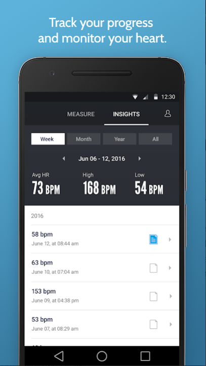

Cargando página...
Evolución del Proyecto
El Servicio de Medicina Física y Rehabilitación del Hospital Nacional Dos de Mayo ofrece tratamiento de rehabilitación integral a pacientes que sufren lesiones, desde neurológicas como accidentes cerebrovasculares, hasta traumatológicas como fracturas o esguinces, con terapia física en el gimnasio del servicio, el cual está equipado con máquinas corredoras y bicicletas fijas. A diario se registra la atención de 150 pacientes para los diferentes tratamientos ofrecidos. (Minsa, 2016)
Este servicio es el único establecimiento del Minsa donde se realiza acciones de rehabilitación cardíaca ambulatoria, la cual está dirigido a pacientes con enfermedades cardiovasculares, víctimas de ataques cardíacos o infartos y recuperados de cirugías al corazón con el objetivo de recuperar la fuerza normal del músculo cardíaco y disminuir el riesgo de problemas cardíacos futuros. (Mayo Clinic,2018)
"Es como si tuviera bíceps que fortalecer. Conforme haga ejercicios gana fibras, en el caso del corazón ganamos vasos, circulación colateral. La sangre ya no circulará por los principales vasos que han sido operados, sino por los que se irán creando alrededor. Se exige al corazón" detalló la jefa del Servicio, doctora Karina Artica Aguirre (Andina, 2015). Además, se ha comprobado que la rehabilitación cardíaca era beneficiosa no sólo para mejorar la calidad de vida de los pacientes cardíacos, sino también disminuía la morbilidad y mortalidad por enfermedades cardiovasculares (Sociedad Española de Cardiología, 2009, p.101). La rehabilitación se lleva a cabo en el hospital con el uso de bicicletas y corredoras que monitorean variables como frecuencia cardiaca, presión y saturación de oxígeno y avisan cuando estas salen del rango seguro.
El Servicio de Medicina Física y Rehabilitación del Hospital Nacional Dos de Mayo sigue el modelo del Programa Integral de rehabilitación cardíaca de Mayo Clinic el cual ofrece varias fases: la primera, denominada internación en el hospital, consiste en todos los procesos y esfuerzos realizados en el hospital después de que el paciente haya sufrido el evento cardíaco; la segunda, en la que se lleva a cabo la rehabilitación, que consiste en el desarrollo de ciertos ejercicios para fortalecer el sistema cardiovascular; y la tercera, también llamada la fase de mantenimiento, en la cual el objetivo es continuar con el plan de ejercicios para mantener la capacidad funcional. (Mayo Clinic, 2018)
El costo de las enfermedades cardiacas en América Latina supera los $ 30.9 mil millones de dólares. En Perú, estas afectan al 16% de la población con un costo total de $ 900 millones, 2.1% de todo el gasto sanitario (World Heart Federation, 2016)
Siendo esta la realidad en el Perú, se puede apreciar la enorme importancia de que los hospitales puedan brindarles una adecuada rehabilitación a los pacientes de enfermedades cardiovasculares. La rehabilitación cardiaca es recomendada (con el nivel más alto de evidencia científica – clase I) para pacientes de enfermedades cardiovasculares por instituciones prestigiosas como la Asociación Americana del Corazón, la Sociedad Europea de Cardiología, el Instituto Nacional de Salud y Excelencia Clínica del Reino Unido, la Asociación Británica de Rehabilitación y Prevención Cardiovascular (BACPR), y muchas otras. Además, existe una gran cantidad de estudios que demuestran que la rehabilitación cardiaca reduce tanto la mortalidad general como la mortalidad asociada a enfermedades cardiacas, y que mejora significativamente la calidad de vida de los pacientes. Un estudio reciente reportó que los pacientes que completan la rehabilitación cardiaca tienen un riesgo de mortalidad de menos de 59% que los pacientes que no la completan. (Sumner et al., 2017)
En el presente proyecto, detallaremos la importancia específica de la rehabilitación cardíaca en el Hospital Dos de Mayo y cómo se podría añadir mejoras al servicio ofrecido.
DEFINICIÓN: .Pacientes del Servicio de Medicina Física y Rehabilitación del Hospital Nacional Dos de Mayo no siguen el programa de Rehabilitación cardíaca a partir de la fase 2.
1. Falta de un monitor de frecuencia cardíaco durante ejercicios de rutina, lo que genera una incorrecta percepción del estado de su condición cardíaca.
2. Condición económica del paciente evita adquirir widgets sofisticados para complementar la terapia física en casa.
3. Miedo a reincidencia en el problema cardíaco.
4. Falta de estímulo para seguir el programa.
1. Reincidencia en problemas cardíacos previos con gran costo para el seguro.
2. Alta demanda de pacientes no reincidentes, complica la atención a los reincidentes.
Las enfermedades cardiovasculares ocupan el cuarto lugar de carga de enfermedad en el país. Por esta causa se han perdido 390 121 años de vida saludable (AVISA), es decir 8% del total de AVISA. En el Perú, estas enfermedades se caracterizan por producir mayor mortalidad. En Perú las enfermedades del corazón afectan al 16% de la población con un costo total de $ 900 millones; 2.1% de todo el gasto sanitario. (World Heart Federation, 2016)
Gráfico 2. Carga de enfermedades en el Perú 2004. (FUENTE: Rev Peru Med Exp Salud Publica. 2009)
En el Perú la insuficiencia cardiaca, la fibrilación auricular, la hipertensión arterial y el infarto de miocardio son las enfermedades cardiovasculares de mayor incidencia, y esta última la segunda causa principal de muerte en la población adulta. Se sabe también que en nuestra capital se producen entre 4 y 5 infartos de miocardio al día, y que en los últimos 5 años los casos de enfermedades relacionadas con la obstrucción de las arterias coronarias se incrementaron en un 83%, presentando mayores casos de incidencia en personas de entre 30 y 65 años, mientras que antes se presentaba en edades más avanzadas (INEI, 2012).
En el Hospital 2 de mayo, recae una enorme responsabilidad al ser considerado “Centro de Referencia Cardiovascular del Perú” por el MINSA. En el siguiente gráfico se observa la demanda insatisfecha para pacientes con enfermedades cardiovasculares con riesgo de muerte.
Gráfico 1. Demanda insatisfecha en el año 2017, las barras verdes oscuras demuestran el número de pacientes realizados (demanda satisfecha) mientras que las barras verdes claras demuestran el número de pacientes rechazados o no realizados (demanda insatisfecha) (FUENTE: Estadística Sala Híbrida Hospital Dos de Mayo y CENARUE)
De este mismo estudio realizado por el Hospital 2 de mayo, se calculó la cantidad de horas que se debería emplear para satisfacer la demanda, siendo esta más de 3244.48, significando esto 10 horas diarias. El hospital solo cuenta con una sala de procedimientos híbridos del Departamento de Cirugía de Tórax y Cardiovascular, en la cual se ocupa el 25% del tiempo en procedimientos cardíacos intervencionistas. Sumado a la falta de personal, se considera imposible satisfacer la demanda actual y esta situación se complica con la cantidad de pacientes de estas enfermedades que reingresan por emergencia. (11 por mes)
Tabla 1. Horas necesarias para cubrir demanda insatisfecha. (FUENTE: Estadística Sala Híbrida Hospital Dos de Mayo y CENARUE)
Tabla 2. Ingresos de falla cardiaca por emergencia. (FUENTE: Estadística Sala Híbrida Hospital Dos de Mayo y CENARUE)
Según la OMS, las enfermedades cardiovasculares son la principal causa de la muerte en el mundo: 17,7 millones en el año 2015 (alrededor del 30% de las muertes registradas anualmente). De estas muertes, el 75% se producen en países de ingresos bajos y medios. Esta misma organización plantea la vitalidad de tratamientos y programas efectivos para reducir estas cifras alarmantes que aumentan cada año.
Gráfico 3. Porcentaje de causa de muerte en el mundo IHME (2016). (Fuente: OMS)
World Heart Federation sostiene que en América Latina se supera los 30 mil millones de dólares por costos en enfermedades cardiovasculares anualmente desde el año 2015.
Tabla 3. Costos de enfermedades cardiovasculares en América Latina, 2015. (Fuente: World Heart Federation)
El diagnóstico de enfermedades cardiacas tiene un impacto en la capacidad laboral de distintas formas, pero regresar al trabajo después de un tratamiento presenta problemas más graves por la gran posibilidad de que haya una reincidencia en la enfermedad cardiaca tratada. La condición más común es CHD (defecto congénito del corazón), al regresar al trabajo, el empleado presenta dolor en el pecho durante los ejercicios si se desarrollan mal, riesgo de arritmia y una afección a la función ventricular izquierda. Todo esto afectaría su capacidad de realizar sus ejercicios prescritos o actividades simples en el trabajo. Los síntomas de pacientes con hipertensión no controlada son dolor de cabeza, mareo o malestar en general; dificultando su regreso al trabajo. Todo esto significa que donde hubo alguna falla cardiaca, las probabilidades de regresar al trabajo decrecen; pero tecnologías que mejoren el tratamiento y lo vuelvan más efectivo, lograrían aumentar la cantidad de empleados que si se reincorporan al trabajo (Peréz et al., 2014). En otros estudios se ve como a algunos (menos del 20%) no se les recomienda la reinserción laboral por la gravedad de sus casos (Fundación Española del Corazón,2011), pero en el resto de casos un tratamiento podía permitirles regresar en 10 semanas (tras una mejoría física, psicológica y educacional); resaltando así la importancia de la rehabilitación cardiaca para enfrentar importantes costos derivados de la incapacidad laboral (por largos periodos de inactividad o pérdida de productividad
Para conocer el riesgo de posibles complicaciones durante el ejercicio los pacientes deben ser estratificados mediante la clasificación propuesta por la Asociación Americana de Rehabilitación Cardiopulmonar (AACVPR). Las recomendaciones de monitoreo durante rehabilitación dictaminadas por la AACVPR son las siguientes: los pacientes catalogados de bajo riesgo deben monitorizarse durante las primeras 6 a 18 sesiones, inicialmente con monitorización electrocardiográfica y supervisión clínica, con disminución en la frecuencia de la misma entre la sesión 8 y 12, realizándola en forma intermitente y con la supervisión clínica permanente. Los pacientes clasificados como riesgo intermedio deben monitorizarse durante las primeras 12 a 24 sesiones, inicialmente con monitoreo electrocardiográfico continuo y supervisión clínica permanente, con disminución a una forma intermitente después de la sesión número. No existe evidencia concluyente que apoye tales recomendaciones de monitoreo estricto, por lo que la frecuencia y los métodos de monitoreo dependen también de los recursos disponibles, la capacidad y el volumen de pacientes en cada institución, además de la evolución y estado del paciente.14 De acuerdo a la experiencia de los médicos involucrados en este consenso, se sugiere que de ser posible deberían monitorizarse todos los pacientes de alto riesgo durante las primeras 12 a 24 semanas. Los de riesgo intermedio quedan a criterio del servicio donde se rehabilitan. De contar con monitorización se utilizará el mismo criterio que para los de alto riesgo. Los de bajo riesgo no requieren monitorización debido a que la tasa de complicaciones es muy baja. Una supervisión mayor debe llevarse a cabo cuando existe algún cambio en el estado de salud, aparición de síntomas u otra evidencia de progresión de la enfermedad, así como en pacientes de alto riesgo. La monitorización puede ser una herramienta útil para valorar la respuesta cuando se aumenta la intensidad del ejercicio aeróbico.
Las posibles complicaciones cardíacas durante los programas de rehabilitación cardíaca son (Tabla 3): el paro cardíaco, arritmias, IAM, entre otras. La incidencia de paro cardíaco es relativamente baja. De acuerdo a estudios realizados por Van Camp y Peterson, con datos de 167 programas de RCV en Estados Unidos que incluyeron a 51.303 pacientes, quienes realizaron 2 millones de horas de ejercicio durante el período 1980- 1984; se presentaron 21 paros cardíacos de los cuales 18 fueron reanimados satisfactoriamente y tres fueron fatales.1 Se estima que el riesgo de una complicación mayor, como paro cardíaco, muerte o IAM, es de un evento por cada 60.000-80.000 horas de ejercicio supervisadas. Para lograr una mayor seguridad durante la actividad física en una sesión de rehabilitación, se aconseja la realización de una evaluación integral del paciente con el objetivo de conocer el grado de riesgo cardiovascular que posee cada paciente, la prescripción individual del ejercicio y la monitorización del mismo. De esta manera conocer el nivel adecuado de especialización, entrenamiento y conocimiento del personal médico. La supervisión médica es el factor de seguridad más importante en la RCV. Durante la sesión de ejercicio se sugiere la presencia o disponibilidad inmediata de un médico especialista en RCV con conocimiento en el manejo de las complicaciones o de personal capacitado en reanimación cardiovascular de emergencia. Los pacientes deben ser educados respecto a su autoevaluación que incluye la presencia de síntomas, percepción de esfuerzo durante el ejercicio, bienestar, límites de riesgo y medidas inmediatas que debería tomar, como de informar al grupo de rehabilitación o la suspensión inmediata del ejercicio. Las guías relacionadas con la supervisión clínica de los pacientes durante los programas de prevención secundaria continúa siendo un área de discusión. La intensidad de la supervisión médica está guiada por la edad, diagnóstico y comorbilidades del paciente que asiste al programa de rehabilitación, además del momento en que se encuentra con respecto al evento cardiovascular, y la evolución que curse durante las sesiones. El número de sesiones monitorizadas electrocardiográficamente no es una medida de valor clínico del programa de ejercicio; este tipo de monitorización es una de las técnicas que el grupo puede emplear para la supervisión de los pacientes.
Tabla 4. Intervenciones y metas para cada fase de rehabilitación.
Tabla 5. Fases de un programa de rehabilitación cardíaca.
Existe un enorme interés en medir la actividad física en investigaciones biomédicas. Esta medición puede informar a los médicos a un diagnóstico eficiente y tomar decisiones correctas sobre el tratamiento recomendado al paciente. Incluso estos monitores intervienen conductualmente en la conducta del paciente, aumentando su interés en prevenir enfermedades y aumentar su actividad física. (Wright et al.,2017)
Frente a esto, se han presentado monitores portátiles utilizables durante rutinas de ejercicios.
1. Construcción de un pulsómetro usando FPGA:
El pulsómetro es un instrumento que se utiliza para medir la velocidad de los latidos del corazón o del pulso cardíaco La utilización de pulsómetros se ha instaurado de manera general entre todos los deportistas profesionales sometidos a unos esfuerzos intensos de larga duración y entre aquellos aficionados a los deportes, como pudieran ser el ciclismo o el atletismo de fondo. El pulsómetro ofrece al deportista, ya sea de élite o puramente ocasional, la posibilidad de mantener un control exhaustivo de su entrenamiento, logrando unos mejores resultados. Los pulsómetros miden el progreso y cuidado del corazón de una manera precisa mientras realiza sus ejercicios y entrenamiento
Pulsómetro utilizando un sistema digital basado en una FPGA. El sistema toma los datos proporcionados por un sensor de pulso cardíaco, los procesa y muestra el resultado en un visualizador.
Se ha analizado los sensores de pulso cardíaco existentes en el mercado, seleccionándose el sensor de Maxim MAX30102. Este sensor consta de dos fotodiodos y dos fotoreceptores, uno de luz roja y otro de luz infrarroja, con los que se mide la reflexión de la luz sobre la piel del cuerpo humano. A través de la intensidad de esta reflexión se puede obtener el ritmo cardíaco. Este sensor tiene una interfaz I2C para transmitir los datos al exterior.
Los resultados del proyecto muestran que el pulsímetro ofrece resultados correctos. El sistema diseñado es capaz de medir un ritmo cardíaco de hasta 200 pulsaciones, siendo válido tanto en aplicaciones médicas como en aplicaciones de salud personal, ocio y deporte. (Muela, 2017)
Pulsómetro conectado a FPGA
2. MONITOR DE FRECUENCIA CARDÍACA - MODO TOUCH HR-310LA:
Este monitor de frecuencia cardíaca proporciona información de los datos de ejercicio, detectando la frecuencia cardíaca y calorías consumidas, al registrar datos del usuario. Cuenta con una alarma visual y audible al sobrepasar el límite inferior o superior de la frecuencia cardíaca. El monitor viene con función de Modo Touch, facilitando el acceso a los datos de ejercicio con sólo tocar la pantalla en vez de presionar un botón. Precio: S/189 (Mercado Libre)
Ventajas:
-Uso simplificado mediante modo Touch.
-Alarma incorporada.
-Almacenamiento de datos.
Desventajas:
-Los límites máximos y mínimos de frecuencia se basan en la actividad física a realizar y no en las características de cada usuario.
-La variable de frecuencia no es la única a considerar para pacientes de rehabilitación cardíaca.

Monitor de frecuencia cardíaca OMRON.
3. PULSIOXÍMETRO CON ARDUINO:
El pulsímetro calcula la saturación de oxígeno y el latido cardiaco (pulso) a través del dedo del paciente. El pulsímetro realiza la medición no invasiva del oxígeno transportado por la hemoglobina en el interior de los vasos sanguíneos. Detecta los bombeos de sangre como cambios de más o menos absorción. 1. Definición El pulsímetro calcula la saturación de oxígeno y el latido cardiaco (pulso) a través del dedo del paciente. El pulsímetro realiza la medición no invasiva del oxígeno transportado por la hemoglobina en el interior de los vasos sanguíneos. Detecta los bombeos de sangre como cambios de más o menos absorción. La hemoglobina (HB) es una proteína globular, que está presente en altas concentraciones en lo glóbulos rojos y se encarga del transporte de O2 del aparato respiratorio hacia los tejidos periféricos; y del transporte de CO2 y protones (H+) de los tejidos periféricos hasta los pulmones para ser excretados. Los valores normales en sangre son de 13 – 18 g/ dl en el hombre y 12 – 16 g/dl en la mujer. El pulsímetro se utiliza en el hospital, la clínica, en domicilio, en la actividad deportiva, en cualquier lugar donde sea necesario recurrir a este tipo de diagnóstico.(Calderón,2016)
Se cuentan con sensores como el MAX30100 disponible para plataforma Arduino y de menos complejidad en cuanto a circuitos y precio accesible.

Sensor MAX30100
4. Aplicación Instant Heart Rate para Android:
Es el monitor de frecuencia cardíaca más preciso validado por investigaciones de institutos de investigación como UCSF. Se coloca el dedo en la cámara frontal sin ejercer presión para no alterar la circulación de la sangre, lo que generaría una lectura errónea de la frecuencia cardíaca. (Azumio, 2019)
Monitoreo de frecuencia cardíaca.
Registro de ejercicios diario.
Ventajas:
-Reporte de medición de frecuencia cardiaca.
-Plataforma estética, interactiva e informativa.
Desventajas:
Consideraciones para el diseño del prototipo:

Tabla 6.Requerimientos de diseño.
Componentes requeridos en el prototipo:
I. HARDWARE
-Sensores de frecuencia cardíaca y saturación de oxígeno (pulsioxímetro)
-Pantallas para visualización de data en el mismo prototipo.
-Soporte estético para los componentes.
II. SOFTWARE
-Programas de alerta, procesamiento y envío de data (conectividad).
-Manual de uso para el usuario y para el especialista encargado de la rehabilitación.
Concepto 1
Aplicación para dispositivos Android con plataforma de seguimiento durante la rehabilitación cardíaca
Esta aplicación cubriría la necesidad de un seguimiento del cumplimiento de las sesiones del programa de rehabilitación cardiaca tanto en el hospital como en el domicilio de los pacientes. Contará con un sistema de registro de datos por día para que el paciente ingrese lo solicitado y se genere un reporte diario que será visualizada en una plantilla para que el médico verifique el seguimiento de las sesiones.
Se contará también con una alarma insistente diaria (ajustada por el paciente) para recordar cada sesión así mismo dentro de la app se encontrará información referente a la rehabilitación cardíaca.
Plantilla de datos de apliación
Concepto 2
Dispositivo monitor de frecuencia cardíaca con visualización de datos en aplicación móvil y sistema de alarma.
Este monitor utilizará un sensor de frecuencia cardíaca, el cual será colocado en el dedo del paciente como en la imagen referencial, se construirá un soporte estético donde se incluirá un microcontrolador conectado al sensor y a un módulo bluetooth para enviar la información a una aplicación móvil que mostrará la frecuencia cardíaca instantánea. Se considerarán ejercicios de la sesión de rehabilitación cardíaca para construir el dispositivo de tal manera que ninguno se vea limitado por el uso del monitor.
Imagen referencial de ubicación de sensor de frecuencia cardíaca.
Los niveles de frecuencia cardiaca máxima y mínima serán previamente ajustadas por el paciente para que se pueda programar la alarma (led prendido en el dispositivo y alarma de sonido en celular).
Funcionamiento de Aplicación.
Concepto 3
Pulsioxímetro para indicar nivel de fatiga durante el ejercicio.
Existe una correlación inversamente proporcional entre la escala de Borg modificada, que cuantifica el nivel de sensación de fatiga de un paciente, y la saturación de oxígeno durante la realización de pruebas de esfuerzo. Es decir, a mayor nivel de fatiga en la escala de Borg, menor será el porcentaje de saturación de oxígeno. (Valencia et al., 2012)
Nuestro dispositivo se basará en el proyecto visto en la sección de Proyectos similares, utilizando un pulsioxímetro para medir los niveles de frecuencia cardíaca y saturación de oxígeno, mostrando estos valores en una pantalla LED. Este proyecto será adaptado para convertirlo en portátil como en la imagen referencial y poder ser usado durante el ejercicio.
Imagen referencial pulsioxímetro
Desventajas:
Escala 0-3, siendo 0 el mínimo y 3 el máximo. El (-) indica que el requerimiento no va ligado con el concepto por lo que no tendría sentido su evaluación.
Tabla 7. Tabla de evaluación de conceptos
En los tres conceptos se abarcan ideas diferentes como monitoreo con alarma, incentivo de ejercicios e información complementaria durante ejercicios. Si bien es cierto, el CONCEPTO 2 resultó el mejor evaluado, se podrían agregar los otros conceptos como módulos secundarios (agregar funciones del concepto 1 a la aplicación del concepto 2, agregar información de saturación de oxígeno en la aplicación del concepto 2).
World Heart Federation(2016, 03 junio). World Congress of Cardiology & Cardiovascular Health [archivo PDF],1-3.Recuperado de: https://www.world-heart-federation.org/wp-content/uploads/2017/05/spanish-press-release.pdf
Mayo Clinic.(2018, 07 febrero). Rehabilitación Cardiaca. Recuperado de: https://www.mayoclinic.org/es-es/tests-procedures/cardiac-rehabilitation/about/pac-20385192.
Sociedad Española de Cardiología.(2009).Rehabilitación Cardiaca [archivo PDF], 101. Recuperado de: https://secardiologia.es/images/publicaciones/libros/rehabilitacion-cardiaca.pdf.
Minsa. (2016, 01 setiembre). Hospital Dos de Mayo: Centro de referencia nacional en rehabilitación cardiaca de pacientes. Recuperado de: https://www.gob.pe/institucion/minsa/noticias/14904-hospital-dos-de-mayo-centro-de-referencia-nacional-en-rehabilitacion-cardiaca-de-pacientes
Arévalo, J., Bayona., R. y Dewar, R. (2015). El problema de la brecha tecnológica: Un asunto de cultura. Sinapsis (7), 35- 43.
Muela Galán, D. (2017). Construcción de un pulsómetro usando FPGAS. (Trabajo Finde Grado Inédito). Universidad de Sevilla, Sevilla.
Fundación Española del Corazón. [Internet]. 2011 [citado el 30 de septiembre de 2019]. Recuperado a partir de: https://fundaciondelcorazon.com/prensa/notas-de-prensa/2748-casi-90-de-pacientes-se-reincorpora-a-vida-laboral-tras-evento-cardiaco.html
Valencia CA, Jiménez OJH, Díaz ML, Mazadiego GME. (2012). Correlación entre la escala de Borg modificada y la saturación de oxígeno durante la prueba de esfuerzo máxima en pacientes postinfartados. Revista Mexicana de Medicina Física y Rehabilitación, 24(1), 5-9.
I. Pérez, R. Tallon, M. González. Índice de reinserción laboral tras un programa de rehabilitación cardiaca. Med Segur Trab [Internet]. 2014[citado 30 de septiembre de 2019]; 60(235) 370-378. Recuperado a partir de: http://scielo.isciii.es/pdf/mesetra/v60n235/inspeccion2.pdf